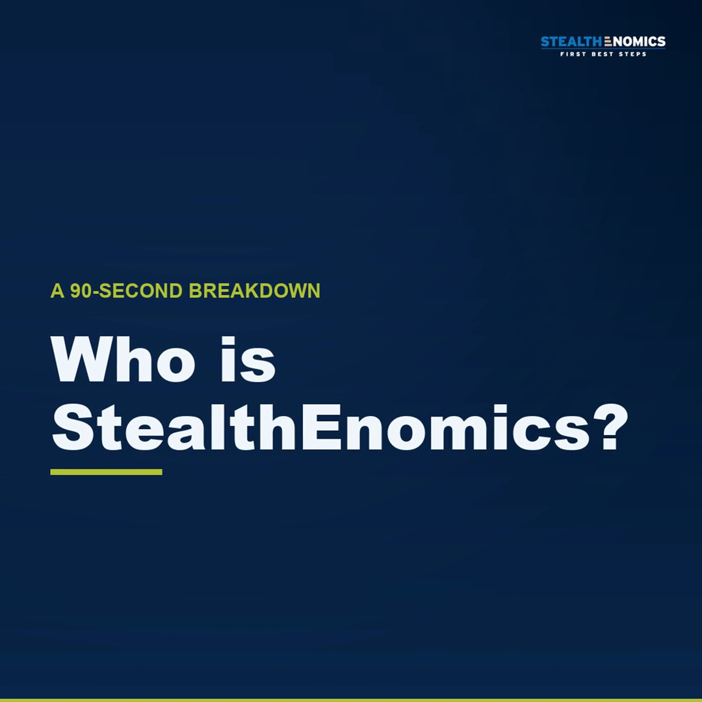
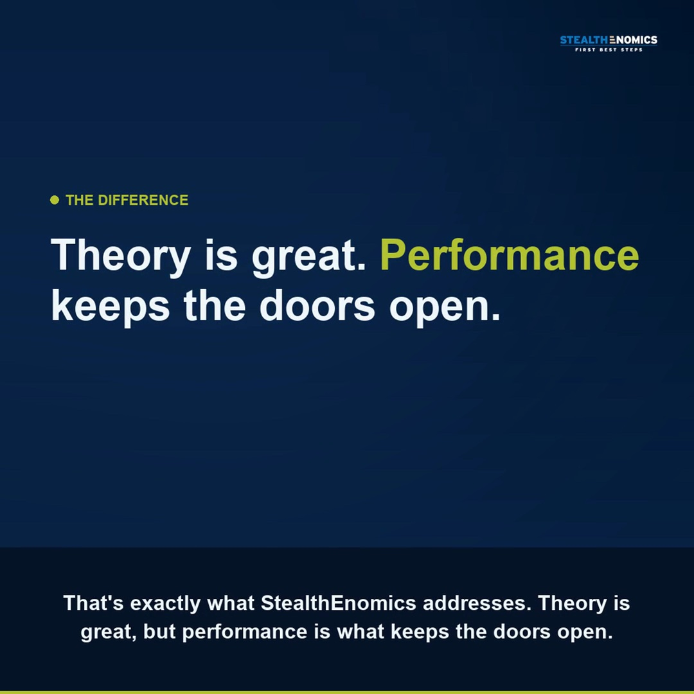

Work samples
Social identity and posts, short-form video editing and copywriting, produced end to end.
A full visual identity for a fintech-education brand: logo system, palette, a "corporate surrealism" visual strategy and the posts built on it.


Motion-graphics explainer and short-form edits for a B2B fintech-education brand.


B2B copy that turns technical topics into clear, persuasive messaging.
Most tech overspending doesn't come from bad intentions. It comes from fragmented decisions and vendor-led narratives.
The real question isn't "Can we afford an advisor?" It's "Are we buying the right technology at the right terms?"
Are your tech investments driven by strategy, or by sales decks?
Structured, independent tech procurement can cut IT costs by 10 to 30%.
Most overspending isn't bad intentions, it's fragmented decisions and vendor-led narratives.
Save this for your next vendor evaluation.